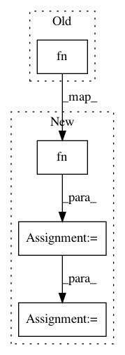

9b7ce0f7b9ea62ef169c019462c4e193d728a278,rastervision2/pipeline/runner/local_runner.py,LocalRunner,run,#LocalRunner#Any#Any#Any#Any#,19
Before Change
"python -m rastervision2.pipeline.cli run_command "
"{} {}".format(cfg_json_uri, command))
else:
invocation = (" ".join(fn()))
makefile += "\t{}\n\n".format(invocation)
curr_command_inds.append(curr_command_ind)
curr_command_ind += 1
After Change
else:
if len(params) == 0:
// No-parameter external command
cmds = [fn()]
elif len(params) == 1:
// One-paramater (split) external command
cmds = fn(num_splits)
else:
// No command
cmds = []
for cmd in cmds:
makefile += "{}: ".format(curr_command_ind)
makefile += " ".join([str(ci) for ci in prev_command_inds])
makefile += "\n"
invocation = (" ".join(cmd))
makefile += "\t{}\n\n".format(invocation)
curr_command_inds.append(curr_command_ind)
curr_command_ind += 1
prev_command_inds = curr_command_inds
makefile_path = join(dirname(cfg_json_uri), "Makefile")
str_to_file(makefile, makefile_path)
In pattern: SUPERPATTERN
Frequency: 3
Non-data size: 4
Instances
Project Name: azavea/raster-vision
Commit Name: 9b7ce0f7b9ea62ef169c019462c4e193d728a278
Time: 2020-06-10
Author: jmcclain@azavea.com
File Name: rastervision2/pipeline/runner/local_runner.py
Class Name: LocalRunner
Method Name: run
Project Name: gpleiss/efficient_densenet_pytorch
Commit Name: b96c824d5fc325b6f3ad4d10031a7ec28f9e941f
Time: 2018-03-05
Author: gpleiss@gmail.com
File Name: models/densenet_efficient.py
Class Name: _EfficientDensenetBottleneck
Method Name: forward
Project Name: azavea/raster-vision
Commit Name: 9b7ce0f7b9ea62ef169c019462c4e193d728a278
Time: 2020-06-10
Author: jmcclain@azavea.com
File Name: rastervision2/pipeline/runner/inprocess_runner.py
Class Name: InProcessRunner
Method Name: run